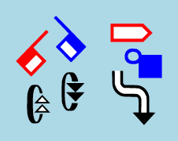

TrueType Fonts
@sutton-signwriting/font-ttf



@sutton-signwriting/font-ttf is a javascript package for the browser that generates SVG and PNG images for individual symbols and complete signs using TrueType Fonts. The package covers the entire set of the International SignWritnig Alphabet 2010 (ISWA 2010).
This package supports both Formal SignWriting in ASCII (FSW) and SignWriting in Unicode (SWU) character sets, along with the style string. See draft-slevinski-formal-signwriting for detailed specification.
Useful links
- GitHub Repo: https://github.com/sutton-signwriting/font-ttf
- Documentation: https://sutton-signwriting.github.io/font-ttf/
- Issue Tracker: https://github.com/sutton-signwriting/font-ttf/issues
- Online Discussion: https://gitter.im/sutton-signwriting/community
Installation
Install TrueType Font
The TrueType Fonts can be installed on Windows, Mac, and Linux. For iOS, two mobile configurations are available. Installation is not possible on Android.
Install with NPM
npm install @sutton-signwriting/font-ttf
Install with GIT
# download package
git clone https://github.com/sutton-signwriting/font-ttf.git
# install dependancies
cd font-ttf
npm install
# create project documentation
npm run docs
# create project files
npm run build
Usage
Using as a module
// import entire library
import ttf from '@sutton-signwriting/font-ttf'
// import individual module
import font '@sutton-signwriting/font-ttf/font/font.min.mjs'
Using in the Browser
Local files
// import entire library
// available as ssw.ttf
<script src="index.js"></script>
// import individual module
// available as ssw.ttf.font
<script src="font/font.js"></script>
Unpkg
// import entire library
// available as ssw.ttf
<script src="https://unpkg.com/@sutton-signwriting/font-ttf@1.0.0"></script>
// import individual module
// available as ssw.ttf.font
<script src="https://unpkg.com/@sutton-signwriting/font-ttf@1.0.0/font/font.min.js"></script>
Configure font for VS Code
File >> Preferences >> Settings
Search for "font family". Append SuttonSignWritingOneD to the list of fonts. Restart VS Code.
License
MIT
SignWriting General Interest
- SignWriting Website: https://signwriting.org/
- Wikipedia page: https://en.wikipedia.org/wiki/SignWriting
- Email Discussion: https://www.signwriting.org/forums/swlist/
- Facebook Group: https://www.facebook.com/groups/SuttonSignWriting/
font
The font module contains functions for handing the TrueType fonts.
font.cssAppend
Function that appends font-face CSS for the Sutton SignWriting fonts for system installed fonts, relative directory fonts, or content delivery network
(string)
an optional relative directory for font location
font.cssAppend('./font/')
font.cssLoaded
Function that executes a callback function once the Sutton SignWriiting Line and Fill fonts are ready to use
(function)
a callback function to execute when fonts are ready
const callback = () => {
console.log("Sutton SignWriting Line and Fill fonts are ready to use")
}
font.cssLoaded( callback )
font.cssLoadedLine
Function that executes a callback function once the Sutton SignWriiting Line font is ready to use
(function)
a callback function to execute when line font is ready
const callback = () => {
console.log("Sutton SignWriting Line font is ready to use")
}
font.cssLoadedLine( callback )
font.cssLoadedFill
Function that executes a callback function once the Sutton SignWriiting Fill font is ready to use
(function)
a callback function to execute when fill font is ready
const callback = () => {
console.log("Sutton SignWriting Fill font is ready to use")
}
font.cssLoadedFill( callback )
font.symbolSize
Function that returns the size of a symbol using an id
(number)
a 16-bit number of a symbol
font.symbolSize(1)
return [15,30]
font.symbolLine
Function that returns a plane 15 character for a symbol line using an id
(number)
a 16-bit number of a symbol
font.symbolLine(1)
return ''
font.symbolFill
Function that returns a plane 16 character for a symbol fill using an id
(number)
a 16-bit number of a symbol
font.symbolFill(1)
return ''
font.symbolText
Function that creates two text elements for a symbol using an id
(number)
a 16-bit number of a symbol
font.symbolText(1)
return ` <text class="sym-fill" fill="white" style="pointer-events:none;font-family:'SuttonSignWritingFill';font-size:30px;"></text>
<text class="sym-line" fill="black" style="pointer-events:none;font-family:'SuttonSignWritingLine';font-size:30px;"></text>`
fsw
The fsw module contains functions for handling Formal SignWriitng in ASCII (FSW) characters. FSW characters definition
fsw.symbolSize
Function that returns the size of a symbol using an FSW symbol key
(string)
an FSW symbol key
fsw.symbolSize("S10000")
return [15,30]
fsw.symbolLine
Function that returns a plane 15 character for a symbol line using an FSW symbol key
(string)
an FSW symbol key
fsw.symbolLine('S10000')
return ''
fsw.symbolFill
Function that returns a plane 16 character for a symbol fill using an FSW symbol key
(string)
an FSW symbol key
font.symbolFill('S10000')
return ''
fsw.symbolText
Function that creates two text elements for a symbol using an FSW symbol key
(string)
an FSW symbol key
fsw.symbolText('S10000')
return ` <text class="sym-fill" fill="white" style="pointer-events:none;font-family:'SuttonSignWritingFill';font-size:30px;"></text>
<text class="sym-line" fill="black" style="pointer-events:none;font-family:'SuttonSignWritingLine';font-size:30px;"></text>`
fsw.symbolSvg
Function that creates an SVG image from an FSW symbol key with an optional style string
(string)
an FSW symbol key with optional style string
fsw.symbolSvg('S10000')
return `<svg version="1.1" xmlns="http://www.w3.org/2000/svg" width="15" height="30" viewBox="500 500 15 30">
<text font-size="0">S10000</text>
<g transform="translate(500,500)">
<text class="sym-fill" fill="white" style="pointer-events:none;font-family:'SuttonSignWritingFill';font-size:30px;"></text>
<text class="sym-line" fill="black" style="pointer-events:none;font-family:'SuttonSignWritingLine';font-size:30px;"></text>
</g>
</svg>`
fsw.symbolPng
Function that creates a binary PNG image from an FSW symbol key with an optional stle string
(string)
an FSW symbol key with optional style string
fsw.symbolPng('S10000')
return 'data:image/png;base64,iVBORw...'
fsw.symbolNormalize
Function that normalizes a symbol with a minimum coordinate for a center of 500,500
(string)
an FSW symbol key with optional coordinate and style string
fsw.symbolNormalize('S10000-CP10G_green_Z2')
return 'S10000493x485-CP10G_green_Z2'
fsw.signSvg
Function that creates an SVG image from an FSW sign with an optional style string
(string)
an FSW sign with optional style string
fsw.signSvg('M525x535S2e748483x510S10011501x466S2e704510x500S10019476x475')
return `<svg version="1.1" xmlns="http://www.w3.org/2000/svg" width="49" height="69" viewBox="476 466 49 69">
<text font-size="0">M525x535S2e748483x510S10011501x466S2e704510x500S10019476x475</text>
<g transform="translate(483,510)">
<text class="sym-fill" fill="white" style="pointer-events:none;font-family:'SuttonSignWritingFill';font-size:30px;"></text>
<text class="sym-line" fill="black" style="pointer-events:none;font-family:'SuttonSignWritingLine';font-size:30px;"></text>
</g>
<g transform="translate(501,466)">
<text class="sym-fill" fill="white" style="pointer-events:none;font-family:'SuttonSignWritingFill';font-size:30px;"></text>
<text class="sym-line" fill="black" style="pointer-events:none;font-family:'SuttonSignWritingLine';font-size:30px;"></text>
</g>
<g transform="translate(510,500)">
<text class="sym-fill" fill="white" style="pointer-events:none;font-family:'SuttonSignWritingFill';font-size:30px;"></text>
<text class="sym-line" fill="black" style="pointer-events:none;font-family:'SuttonSignWritingLine';font-size:30px;"></text>
</g>
<g transform="translate(476,475)">
<text class="sym-fill" fill="white" style="pointer-events:none;font-family:'SuttonSignWritingFill';font-size:30px;"></text>
<text class="sym-line" fill="black" style="pointer-events:none;font-family:'SuttonSignWritingLine';font-size:30px;"></text>
</g>
</svg>`
fsw.signPng
Function that creates a binary PNG image from an FSW sign with an optional style string
(string)
an FSW sign with optional style string
fsw.signPng('M525x535S2e748483x510S10011501x466S20544510x500S10019476x475')
return 'data:image/png;base64,iVBORw...'
fsw.signNormalize
Function that normalizes an FSW sign for a center of 500,500
(string)
an FSW sign with optional style string
fsw.signNormalize('M525x535S2e748483x510S10011501x466S2e704510x500S10019476x475')
return 'M525x535S2e748483x510S10011501x466S2e704510x500S10019476x475'
swu
The swu module contains functions for handling Formal SignWriitng in ASCII (SWU) characters. SWU characters definition
swu.symbolSize
Function that returns the size of a symbol using an SWU symbol character
(string)
an SWU symbol character
swu.symbolSize("")
return [15,30]
swu.symbolLine
Function that returns a plane 15 character for a symbol line using an SWU symbol character
(string)
an SWU symbol character
swu.symbolLine('')
return ''
swu.symbolFill
Function that returns a plane 165 character for a symbol fill using an SWU symbol character
(string)
an SWU symbol character
swu.symbolFill('')
return ''
swu.symbolText
Function that creates two text elements for a symbol using an SWU symbol character
(string)
an SWU symbol character
swu.symbolText('')
return ` <text class="sym-fill" fill="white" style="pointer-events:none;font-family:'SuttonSignWritingFill';font-size:30px;"></text>
<text class="sym-line" fill="black" style="pointer-events:none;font-family:'SuttonSignWritingLine';font-size:30px;"></text>`
swu.symbolSvg
Function that creates an SVG image from an SWU symbol character with an optional style string
(string)
an SWU symbol character with optional style string
swu.symbolSvg('-CP10G_green_Z2')
return `<svg version="1.1" xmlns="http://www.w3.org/2000/svg" width="70" height="100" viewBox="490 490 35 50">
<text font-size="0">-CP10G_green_Z2</text>
<rect x="490" y="490" width="35" height="50" style="fill:green;" />
<g transform="translate(500,500)">
<text class="sym-fill" fill="white" style="pointer-events:none;font-family:'SuttonSignWritingFill';font-size:30px;"></text>
<text class="sym-line" fill="#0000CC" style="pointer-events:none;font-family:'SuttonSignWritingLine';font-size:30px;"></text>
</g>
</svg>`
swu.symbolPng
Function that creates a binary PNG image from an SWU symbol character with an optional stle string
(string)
an SWU symbol character with optional style string
swu.symbolPng('-CP10G_green_Z2')
return 'data:image/png;base64,iVBORw...'
swu.symbolNormalize
Function that normalizes a symbol with a minimum coordinate for a center of 500,500
(string)
an SWU symbol character with optional coordinate and style string
swu.symbolNormalize('')
return '𝣿𝣷'
swu.signSvg
Function that creates an SVG image from an SWU sign with an optional style string
(string)
an SWU sign with optional style string
swu.signSvg('𝠀𝠃𝤟𝤩𝣵𝤐𝤇𝣤𝤐𝤆𝣮𝣭-P10G_green_D_yellow,ff0ff0_Z2')
return `<svg version="1.1" xmlns="http://www.w3.org/2000/svg" width="138" height="178" viewBox="466 456 69 89">
<text font-size="0">𝠀𝠃𝤟𝤩𝣵𝤐𝤇𝣤𝤐𝤆𝣮𝣭-P10G_green_D_yellow,ff0ff0_Z2</text>
<rect x="466" y="456" width="69" height="89" style="fill:green;" />
<g transform="translate(483,510)">
<text class="sym-fill" fill="#ff0ff0" style="pointer-events:none;font-family:\'SuttonSignWritingFill\';font-size:30px;"></text>
<text class="sym-line" fill="yellow" style="pointer-events:none;font-family:\'SuttonSignWritingLine\';font-size:30px;"></text>
</g>
<g transform="translate(501,466)">
<text class="sym-fill" fill="#ff0ff0" style="pointer-events:none;font-family:\'SuttonSignWritingFill\';font-size:30px;"></text>
<text class="sym-line" fill="yellow" style="pointer-events:none;font-family:\'SuttonSignWritingLine\';font-size:30px;"></text>
</g>
<g transform="translate(510,500)">
<text class="sym-fill" fill="#ff0ff0" style="pointer-events:none;font-family:\'SuttonSignWritingFill\';font-size:30px;"></text>
<text class="sym-line" fill="yellow" style="pointer-events:none;font-family:\'SuttonSignWritingLine\';font-size:30px;"></text>
</g>
<g transform="translate(476,475)">
<text class="sym-fill" fill="#ff0ff0" style="pointer-events:none;font-family:\'SuttonSignWritingFill\';font-size:30px;"></text>
<text class="sym-line" fill="yellow" style="pointer-events:none;font-family:\'SuttonSignWritingLine\';font-size:30px;"></text>
</g>
</svg>`
swu.signPng
Function that creates a binary PNG image from an SWU sign with an optional style string
(string)
an SWU sign with optional style string
swu.signPng('𝠀𝠃𝤟𝤩𝣵𝤐𝤇𝣤𝤐𝤆𝣮𝣭')
return 'data:image/png;base64,iVBORw...'
swu.signNormalize
Function that normalizes an SWU sign for a center of 500,500
(string)
an SWU sign with optional style string
swu.signNormalize('𝠀𝠃𝤟𝤩𝣵𝤐𝤇𝣤𝤐𝤆𝣮𝣭')
return '𝠀𝠃𝤟𝤩𝣵𝤐𝤇𝣤𝤐𝤆𝣮𝣭'